Die Freizeitkarten richten sich an Nutzer der Programme Garmin BaseCamp (OS X, Windows), QLandkarte (alle Betriebssysteme) und an Nutzer von Garmin GPS-Geräten.
Schweizer Alpen - Die Rigi Hochflue ist der alpinste der drei grossen Gipfel im Rigimassiv.
Die Freizeitkarten basieren auf den Daten des OpenStreetMap-Projektes und sind als Universalkarten entwickelt, für
- die Freizeit
- und bei Outdoor-Aktivitäten.
| 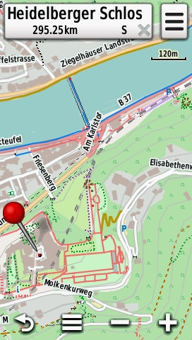 |
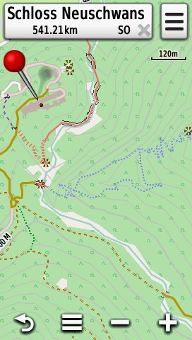 |
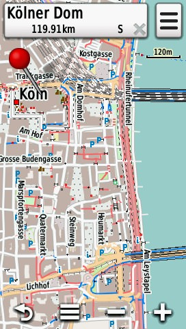 |
1. Schloss Heidelberg, 2. Schloss Neuschwanstein, 3. Kölner Dom
Die Karte kann auf unterschiedliche, kombinierbare Arten genutzt werden:
- am PC (OS X, Windows): Planung einer Route via BaseCamp
- als Papierkarte: Ausdruck einer Karte via BaseCamp
- im GPS-Gerät: Outdoor-Navigation zum Ziel
Eigenschaften der Karte:
- für Autofahrer, Radfahrer und Fußgänger geeignet
- Routing sowohl für Autofahrer als auch für Radfahrer und Fußgänger
- Haltestellen für die Nutzer des öffentlichen Personennahverkehrs
- es sind sehr viele Points-Of-Interest (POIs) in der Karte enthalten
- die meisten dieser POIs werden jedoch sehr dezent dargestellt
- nur wenige POIs zum Thema Freizeit haben ein eigenes Symbol
- topografische Karte mit integrierten Höhenlinien
| 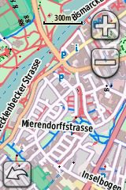 | 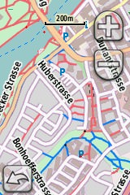 | 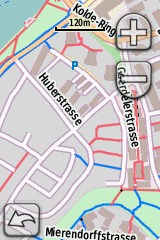 | 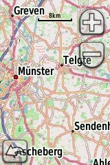 |
| 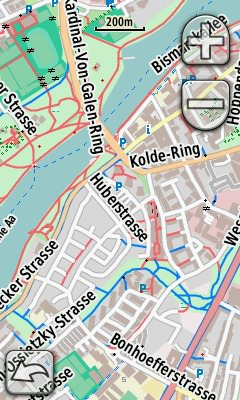 | 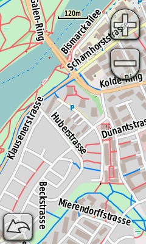 | 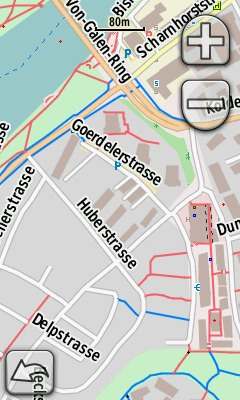 |
| 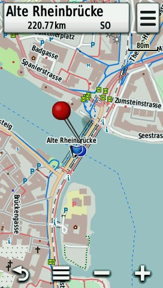 |
 |
Für die hier verfügbare Karte gilt:
- es werden die öffentlichen und aktuellen Basisdaten des OpenStreetMap-Projektes verwendet
- die Kartendarstellung lehnt sich an das Look & Feel der internationalen OpenStreepMap-Karte an, d. h. Karten und deren Interpretation sind OpenStreetMap-Nutzern sofort vertraut
- die Garmin BaseCamp-Funktionen werten die Karten auf, zu nennen sind: Autorouting, Indexsuche, Entfernungsmessung, Koordinatengitter, Druckfunktion, Höhenprofil, ...
- die Karte kann auf vielen Garmin-GPS-Geräten verwendet werden
- die Karte ist kostenlos und kann uneingeschränkt verwendet werden (siehe auch Lizenzbedingungen im Impressum)
- die Karte kann an eigene oder spezielle Bedürfnisse angepasst werden
- die Karte wird regelmäßig (alle zwei Monate) aktualisiert
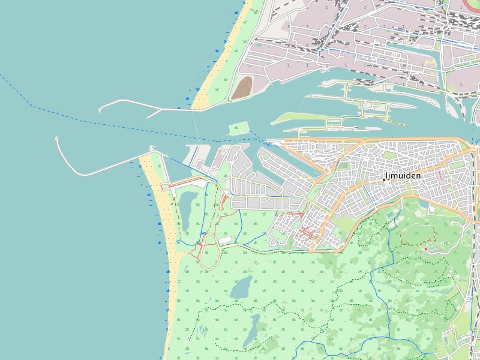
IJmuiden (Niederlande) liegt direkt an der Einfahrt des Nordseekanals, der die Nordsee mit dem Hafen von Amsterdam verbindet.
An den Schleusenkammern wird der sogenannte Amsterdamer Pegel gemessen - aus dem sich die Höhe "Normalnull" (NN) ableitet.
Nutzungsbedingungen:
Die Nutzung des Kartenmaterials erfolgt auf eigene Gefahr. Das Kartenmaterial oder das Routing kann Fehler enthalten oder unzureichend sein. Die Ersteller dieser Karte übernehmen keinerlei Gewährleistung oder Haftung für Schäden die direkt, oder indirekt, durch die Nutzung des Kartenmaterials entstehen.